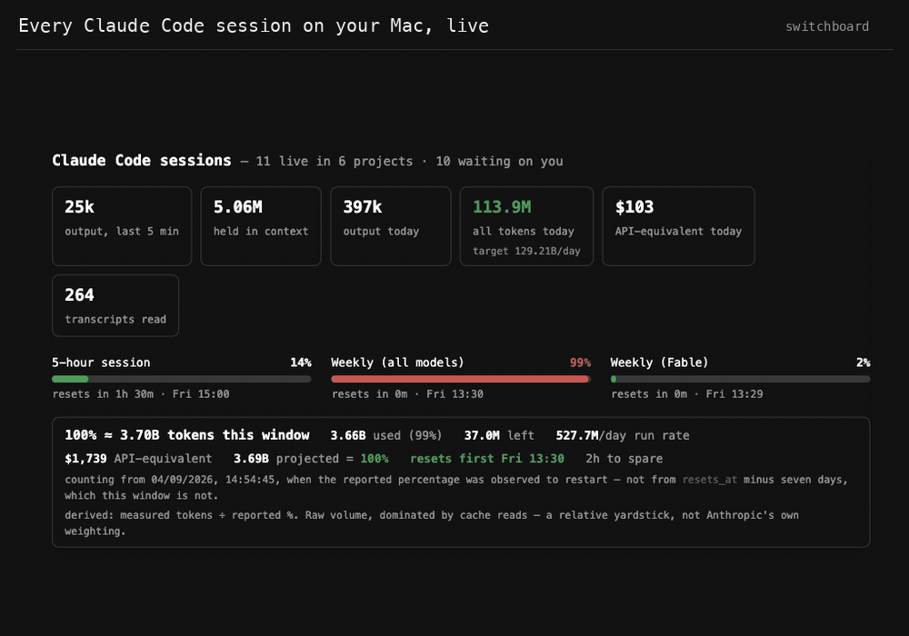

switchboard: a dashboard for every Claude Code session on your Mac
See what each Claude Code session is working on, how many tokens it has burned, how much of your plan is left, and which sessions are messaging each other. Free, open source, no dependencies, no telemetry. Not affiliated with Anthropic.

Features
- Live status of every Claude Code session: busy, idle, waiting on you or stalled
- Token burn rate, context window use, model and git branch per session
- Live 5-hour and weekly plan usage, plus a derived weekly token budget
- API-equivalent cost per session and per day
- Messages flying between sessions, with a chatter log per project
- Click to focus a session's terminal, talk to it from the browser, or compact it
Install
As a Claude Code plugin, then run /switchboard in any session:
/plugin marketplace add itssarthak/claudecode-switchboard
/plugin install switchboardOr run it directly with Node 18+ on macOS:
node claude-sessions.js
# http://localhost:7823